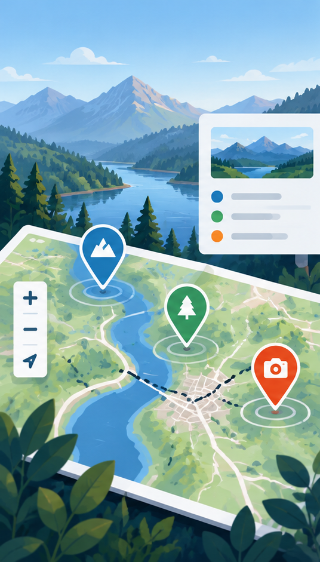
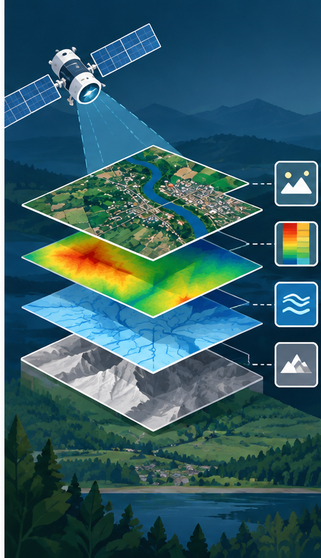
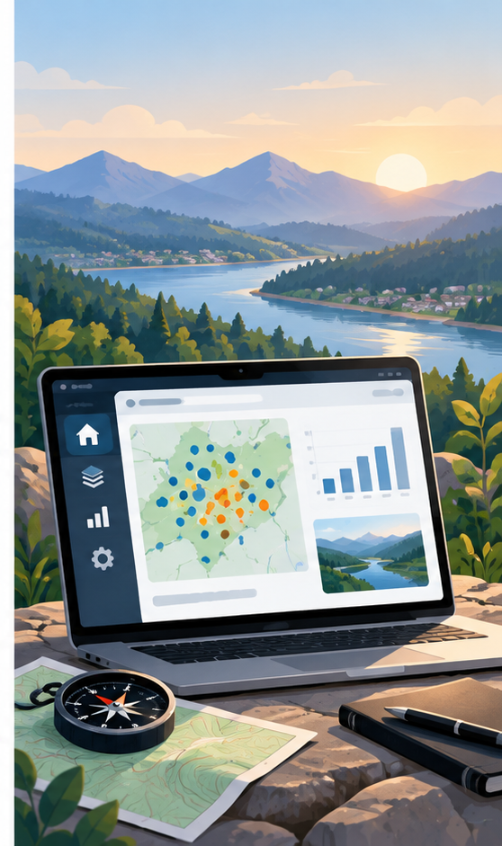

Interaktive Stadtkarte
Eine Webkarte macht Haltestellen, Grünflächen und wichtige Orte einer Stadt sichtbar. Ebenen und Legende helfen dabei, räumliche Zusammenhänge schnell zu erfassen.
Webkarten-ProjektHerzlich Willkommen
Hallo, ich bin Charlotte. Mich interessieren die Geschichten hinter Orten und Landschaften. Ich studiere Geoinformatik und Vermessung und beschäftige mich besonders gern mit Kartographie und räumlicher Analyse.
Hier sammle ich ein paar Stationen meines Weges und Dinge, die mich inspirieren. Schön, dass du vorbeischaust.

Ein kurzer Rückblick
| Jahr | Station | Ort | Stichwort |
|---|---|---|---|
| 2020 | Ein Anfang | München | Neugier |
| 2021 | Neue Perspektiven | Innsbruck | Entdecken |
| 2024 | Studium | New York | Grundlagen |
| 2025 | Erstes eigenes Projekt | London | Ausprobieren |
| 2026 | Zusammenarbeit | Hamburg | Austausch |
| Heute | Der nächste Schritt | Mainz | Weiterdenken |
Zum Weiterklicken
Orte, Ideen und Werkzeuge, zu denen ich gern zurückkehre.
Aktuelles
Einblicke in meine Lernfortschritte und persönliche Entwicklung.
News werden geladen …
Ausgewählte Arbeiten
Aktuelle Projekte aus Kartographie, Fernerkundung und Vermessung.

Eine Webkarte macht Haltestellen, Grünflächen und wichtige Orte einer Stadt sichtbar. Ebenen und Legende helfen dabei, räumliche Zusammenhänge schnell zu erfassen.
Webkarten-Projekt
Satellitenbilder werden ausgewertet, um Vegetation in einem Untersuchungsgebiet abzugrenzen. Die Ergebnisse zeigen, wie sich Grünflächen verteilen und wo Veränderungen auftreten.
Fernerkundungs-Analyse
GNSS- und Tachymetermessungen werden zu einem Lageplan mit Höheninformationen verarbeitet. Ein digitales Geländemodell veranschaulicht anschließend die Form des Areals.
Vermessung & 3D-ModellGeoinformatik 2 · Übung 3
Sechs interaktive Karten: vier mit Python, Folium und GeoJSON, eine 3D-Gebäudekarte mit Cesium sowie eine Kepler.gl-Visualisierung.
Interaktive Grundkarte mit OpenStreetMap.
Ausgewählte Städte mit Markern, Tooltips und Popups.
Mehrere Reisestationen, verbunden durch eine Polyline.
Weltkarte mit hervorgehobenen Ländern und interaktiven Flächen.
Interaktive 3D-Gebäudeansicht auf Basis des LoD2-Gebäudelayers. Datenquelle: basemap.de – 3D.
Öffne den Reiter „Webkarten“, um die 3D-Karte zu laden.
Interaktive Visualisierung der Bevölkerungsverteilung nach Census Tracts mit Kepler.gl.